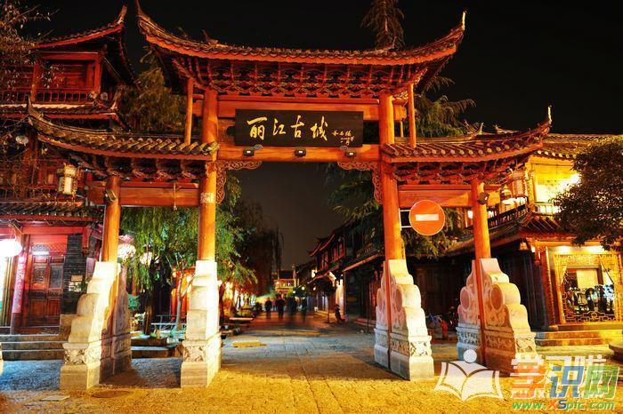
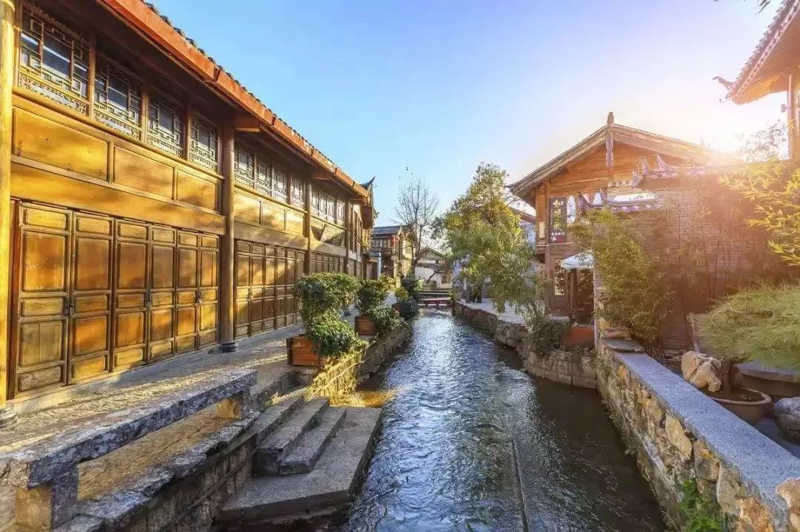

- 
- 
丽江古城
丽江古城未受方九里，旁三门，国中九经九纬，经途九轨的中原建城复制影响。城中无规矩的道路网，无森严的城墙，古城布局中以三山为屏、一川相连；水系利用三河穿城、家家流水；街道布局经络设置有着曲、幽、窄、达的风格。丽江古城的格局是自发性的形成坐西北朝东南的朝向形式。
景点介绍


玉龙雪山
玉龙雪山是亚欧大陆最南端的现代季风海洋型冰川分布区，据1994年出版的《冰川编目》显示，玉龙雪山分布有19条现代冰川，东坡15条，西坡4条，总面积11.6平方千米，白水1号冰川为其中规模最大的冰川，长2.7千米，面积1.5平方千米，平衡线海拔约4800米，冰川末端海拔约4200米。

白沙壁画
白沙壁画是丽江世界文化遗产的组成部分，是丽江多元文化的表现形式之一，是丽江旅游不可或缺的一个部分。白沙壁画位于世界文化遗产--丽江古城组成部分之一的白沙古镇，白沙古镇位于丽江古城北约10公里，北临玉龙雪山，南至龙泉（束河古镇），西依芝山，为一座有一千多年历史古老的小镇，是纳西族在丽江坝的最初聚居地，也是丽江木氏土司的发祥地。